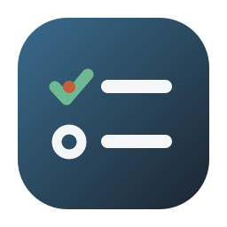

TaskList · Logo 精修（你喜欢 ③清单 / ④剪贴板，做得更简洁）
上排 3 个是精修新版（重点看小尺寸 20px/16px）；下排是你原来看的③④作对照。
A · 清单两行
精修
③的精简版：只留两行、更大更透气，首行竹青勾、行头一点朱。干净利落。

任务清单
托盘 16px
B · 剪贴板·大勾
精修
④的极简版：剪贴板纸面只留一个居中大竹青勾，去掉多余条目，最干净的剪贴板。
任务清单
托盘 16px
C · 剪贴板·描边
精修
③④融合：剪贴板用轻描边轮廓+内两行清单，兼具"剪贴板具象"与"清单干净"。
任务清单
托盘 16px
↓ 对照：你原来看的两版
③ 清单三条（原）
三行清单，信息略多。
任务清单
④ 剪贴板（原）
剪贴板+三行清单，细节多。
任务清单